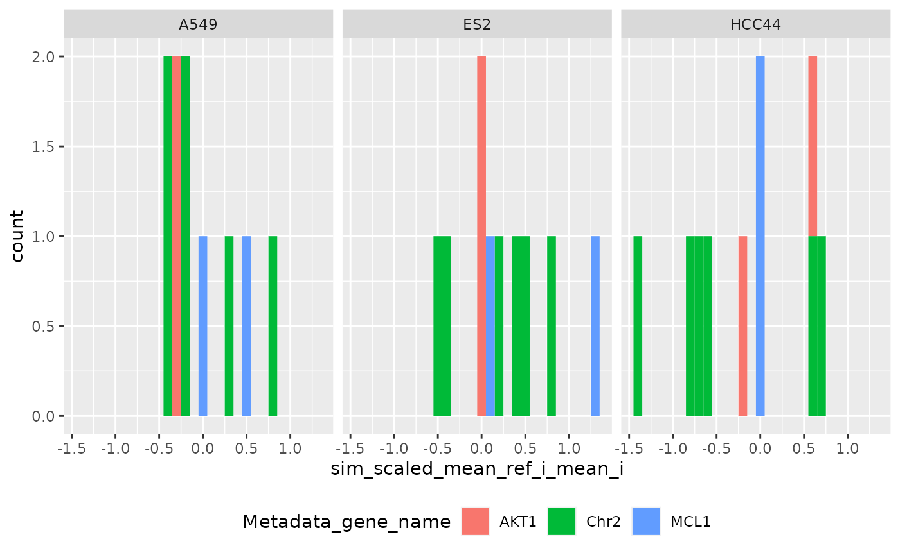
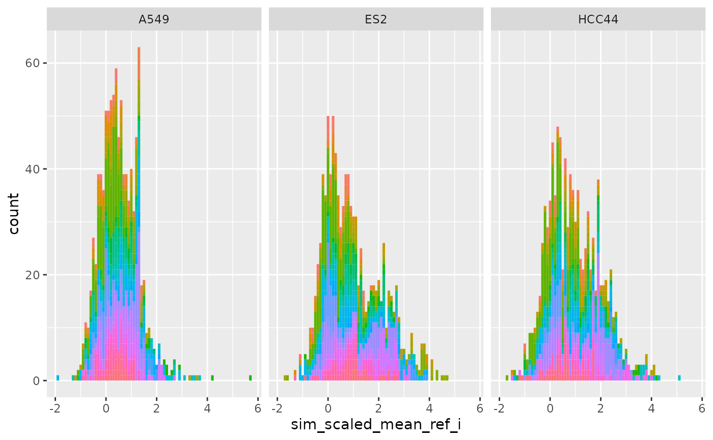
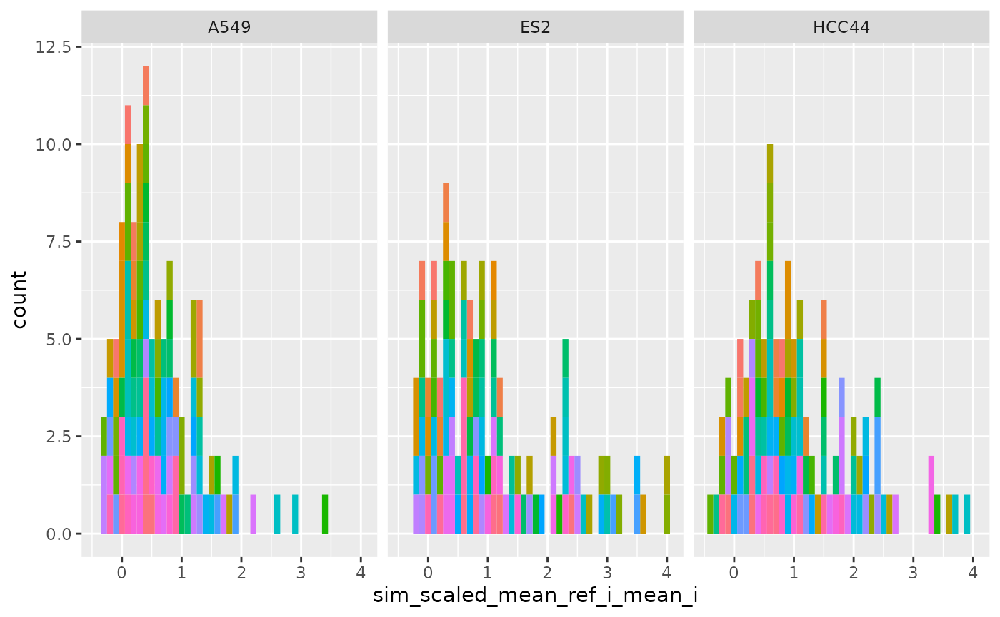
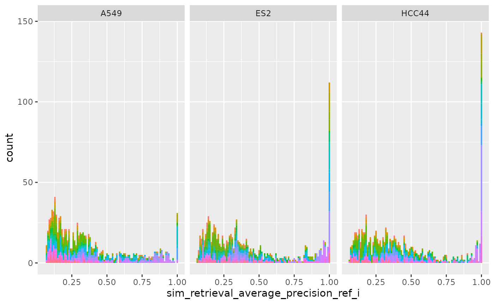
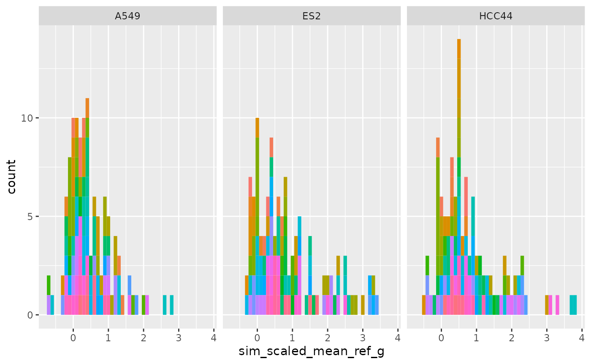

sim_df <- matric::sim_calculate(cellhealth)
drop_group <-
data.frame(Metadata_gene_name = "EMPTY")
reference <-
data.frame(Metadata_gene_name = c("Chr2"))
all_same_cols_ref <-
c("Metadata_cell_line",
"Metadata_Plate")
all_same_cols_rep <-
c("Metadata_cell_line",
"Metadata_gene_name",
"Metadata_pert_name")
all_same_cols_rep_ref <-
c(
"Metadata_cell_line",
"Metadata_gene_name",
"Metadata_pert_name",
"Metadata_Plate"
)
any_different_cols_non_rep <-
c("Metadata_cell_line",
"Metadata_gene_name",
"Metadata_pert_name")
all_same_cols_non_rep <-
c("Metadata_cell_line",
"Metadata_Plate")
all_different_cols_non_rep <-
c("Metadata_gene_name")
all_same_cols_group <-
c("Metadata_cell_line",
"Metadata_gene_name")
any_different_cols_group <-
c("Metadata_cell_line",
"Metadata_gene_name",
"Metadata_pert_name")
annotation_cols <-
c("Metadata_cell_line",
"Metadata_gene_name",
"Metadata_pert_name")
collated_sim <-
matric::sim_collate(
sim_df,
reference,
all_same_cols_rep = all_same_cols_rep,
all_same_cols_rep_ref = all_same_cols_rep_ref,
all_same_cols_ref = all_same_cols_ref,
any_different_cols_non_rep = any_different_cols_non_rep,
all_same_cols_non_rep = all_same_cols_non_rep,
all_different_cols_non_rep = all_different_cols_non_rep,
any_different_cols_group = any_different_cols_group,
all_same_cols_group = all_same_cols_group,
annotation_cols = annotation_cols,
drop_group = drop_group
)
metrics <-
matric::sim_metrics(collated_sim, "ref", calculate_grouped = TRUE)
ggplot(metrics$level_1_0,
aes(sim_scaled_mean_ref_i, fill = Metadata_gene_name)) +
geom_histogram(binwidth = .1) +
facet_wrap( ~ Metadata_cell_line) +
theme(legend.position="bottom", legend.box = "horizontal")
ggplot(metrics$level_1,
aes(sim_scaled_mean_ref_i_mean_i, fill = Metadata_gene_name)) +
geom_histogram(binwidth = .1) +
facet_wrap( ~ Metadata_cell_line) +
theme(legend.position="bottom", legend.box = "horizontal")
ggplot(metrics$level_2_1,
aes(sim_scaled_mean_ref_g, fill = Metadata_gene_name)) +
geom_histogram(binwidth = .1) +
facet_wrap( ~ Metadata_cell_line) +
theme(legend.position="bottom", legend.box = "horizontal")
ggplot(cellhealthmetrics$level_1_0,
aes(sim_scaled_mean_ref_i, fill = Metadata_gene_name)) +
geom_histogram(binwidth = .1) +
facet_wrap( ~ Metadata_cell_line) +
theme(legend.position="none")
ggplot(cellhealthmetrics$level_1,
aes(sim_scaled_mean_ref_i_mean_i, fill = Metadata_gene_name)) +
geom_histogram(binwidth = .1) +
facet_wrap( ~ Metadata_cell_line) +
theme(legend.position="none")
ggplot(cellhealthmetrics$level_1_0,
aes(sim_retrieval_average_precision_ref_i, fill = Metadata_gene_name)) +
geom_histogram(binwidth = .01) +
facet_wrap( ~ Metadata_cell_line) +
theme(legend.position="none")
ggplot(cellhealthmetrics$level_2_1,
aes(sim_scaled_mean_ref_g, fill = Metadata_gene_name)) +
geom_histogram(binwidth = .1) +
facet_wrap( ~ Metadata_cell_line) +
theme(legend.position="none")
ggplot(cellhealthmetrics$level_2_1,
aes(sim_retrieval_average_precision_ref_g, fill = Metadata_gene_name)) +
geom_histogram(binwidth = .02) +
facet_wrap( ~ Metadata_cell_line) +
theme(legend.position="none")
sim_df_lazy <-
matric::sim_calculate(
cellhealth,
lazy = TRUE)
collated_sim_lazy <-
matric::sim_collate(
sim_df_lazy,
reference,
all_same_cols_rep = all_same_cols_rep,
all_same_cols_rep_ref = all_same_cols_rep_ref,
all_same_cols_ref = all_same_cols_ref,
any_different_cols_non_rep = any_different_cols_non_rep,
all_same_cols_non_rep = all_same_cols_non_rep,
all_different_cols_non_rep = all_different_cols_non_rep,
any_different_cols_group = any_different_cols_group,
all_same_cols_group = all_same_cols_group,
annotation_cols = annotation_cols,
drop_group = drop_group
)
collated_sim_lazy <-
sim_calculate_ij(cellhealth, collated_sim_lazy)
metrics_lazy <-
matric::sim_metrics(collated_sim_lazy, "ref", calculate_grouped = TRUE)
all.equal(metrics_lazy,
metrics)
#> [1] TRUEThe optimizations are useful only if you are not calculating non-replicate metrics and if the group replicates are not computed on references
sim_df_optimized_lazy <-
matric::sim_calculate(
cellhealth,
lazy = TRUE,
all_same_cols_rep_or_group = all_same_cols_group,
all_same_cols_rep_ref = all_same_cols_rep_ref,
all_same_cols_ref = all_same_cols_ref,
reference = reference
)
collated_sim_optimized_lazy <-
matric::sim_collate(
sim_df_optimized_lazy,
reference,
all_same_cols_rep = all_same_cols_rep,
all_same_cols_rep_ref = all_same_cols_rep_ref,
all_same_cols_ref = all_same_cols_ref,
any_different_cols_non_rep = NULL,
all_same_cols_non_rep = NULL,
all_different_cols_non_rep = NULL,
any_different_cols_group = NULL,
all_same_cols_group = NULL,
annotation_cols = annotation_cols,
drop_group = drop_group
)
collated_sim_optimized_lazy <-
sim_calculate_ij(cellhealth, collated_sim_optimized_lazy)
metrics_optimized_lazy <-
matric::sim_metrics(
collated_sim_optimized_lazy, "ref", calculate_grouped = FALSE)
all.equal(
metrics_optimized_lazy$level_1_0,
metrics$level_1_0)
#> [1] TRUE
all.equal(
metrics_optimized_lazy$level_1,
metrics$level_1)
#> [1] TRUE